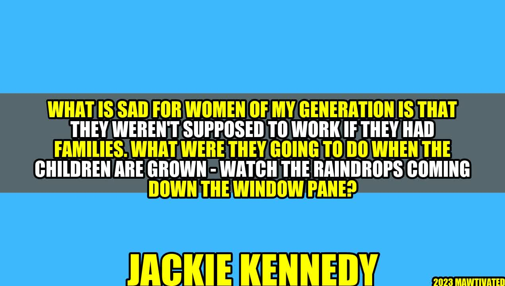

Breaking the Stereotypes: Women Working and Achieving Success

Inspiring story of a woman who broke stereotypes and achieved success
There was once a woman named Mary. She was raised in a family where women were expected to stay at home, raise children, and take care of the household. Mary, however, had a different dream. She wanted to become a doctor and help people. Despite the opposition and disapproval of her family, Mary went ahead and pursued her dream. She worked hard, studied long hours, and faced numerous challenges. But she persevered and finally became a doctor.
Mary's story is just one among many such stories of women who have broken the stereotypes and achieved success in their lives. Women of the previous generations were expected to stay at home and take care of the family. They were not supposed to work or pursue a career. But times have changed, and so have the attitudes towards women's roles in society.
Jackie Kennedy: A Role Model for Women
One such woman who challenged the stereotypes and paved the way for future generations was Jacqueline Kennedy Onassis. She was the wife of President John F. Kennedy and First Lady of the United States. Despite being in the public eye and facing constant scrutiny, she managed to carve her own identity and pursue her interests and passions.
"What is sad for women of my generation is that they weren't supposed to work if they had families. What were they going to do when the children are grown - watch the raindrops coming down the window pane?" - Jacqueline Kennedy Onassis
Jackie Kennedy was a history major and a lover of the arts. She pursued a career in journalism and worked as an editor at Doubleday Publishing. She also became an accomplished equestrian and pursued her passion for horse riding. Her life and achievements are a testament to the fact that women can have successful careers and pursue their interests, even if they have families.
Breaking the Myths about Women and Work
Despite the progress made in the past few decades, there are still many myths and stereotypes about women and work. Let's take a look at some of the most common ones.
- Myth #1: Women who work don't care about their families.
- Myth #2: Women can't have successful careers and a family at the same time.
- Myth #3: Women are not as committed or motivated as men when it comes to work.
These myths are not only unfair but also untrue. Women who work care deeply about their families and are often driven by the desire to provide a better life for them. They can have successful careers and a family at the same time. And women are just as committed and motivated as men when it comes to work.
Examples of Women Who Have Broken Stereotypes
Let's take a look at some inspiring examples of women who have broken stereotypes and achieved success.
- Oprah Winfrey: From a troubled childhood to one of the most successful talk show hosts, Oprah Winfrey has inspired millions with her story of perseverance and determination.
- Indra Nooyi: She was the first woman to become the CEO of PepsiCo, one of the largest food and beverage companies in the world. She is known for her innovative strategies and leadership skills.
- Malala Yousafzai: She became an advocate for girl's education and women's rights, despite facing threats from the Taliban in her native Pakistan. She won the Nobel Peace Prize in 2014 for her activism.
- Sheryl Sandberg: She is the COO of Facebook and the author of the bestselling book, "Lean In". She is also known for her advocacy for women's empowerment and gender equality.
Practical Tips for Women Who Want to Achieve Success
If you are a woman who wants to break stereotypes and achieve success, here are some practical tips to follow:
- Believe in Yourself: No one else is going to believe in you if you don't believe in yourself. Trust your capabilities and work hard towards your goals.
- Find a Mentor: Having a mentor can help you navigate the challenges of the workplace and provide guidance and support.
- Be Willing to Take Risks: Success often comes with taking risks. Don't be afraid to step out of your comfort zone and try new things.
- Never Give Up: Success is not easy, and there will be many obstacles along the way. But if you keep persevering, you will eventually achieve your goals.
Conclusion: Breaking Stereotypes and Achieving Success
- Women can have successful careers and a family at the same time.
- There are still many myths and stereotypes about women and work, but they are not true.
- By believing in themselves, finding mentors, taking risks, and never giving up, women can achieve success and break the stereotypes.
SEO Keywords:
- Women and work
- Breaking stereotypes
- Women's success
- Gender equality
- Women empowerment
Category:
Inspiration & Motivation
Curated by Team Akash.Mittal.Blog
Share on Twitter Share on LinkedIn